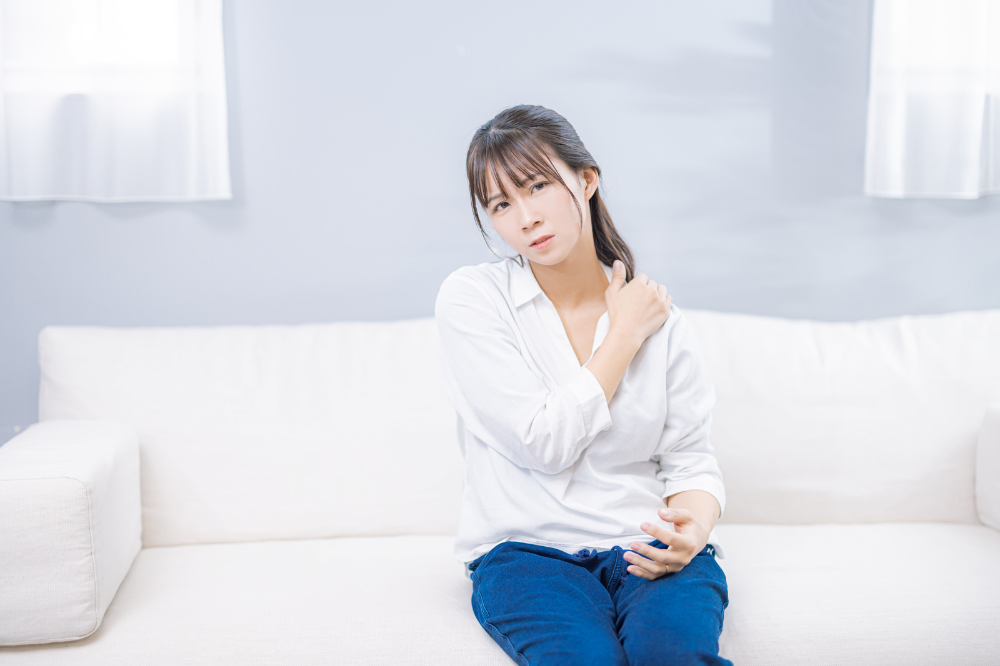
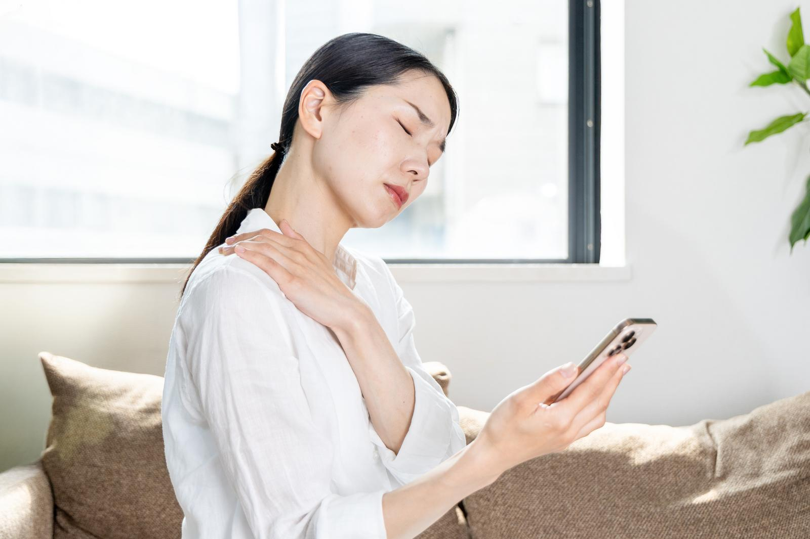
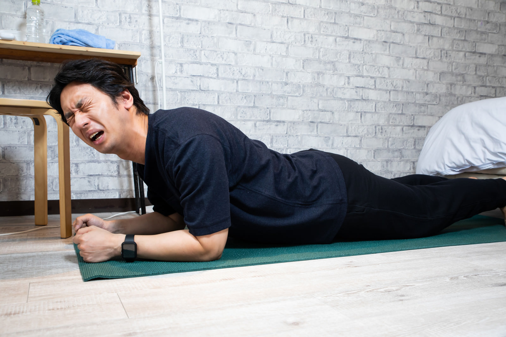
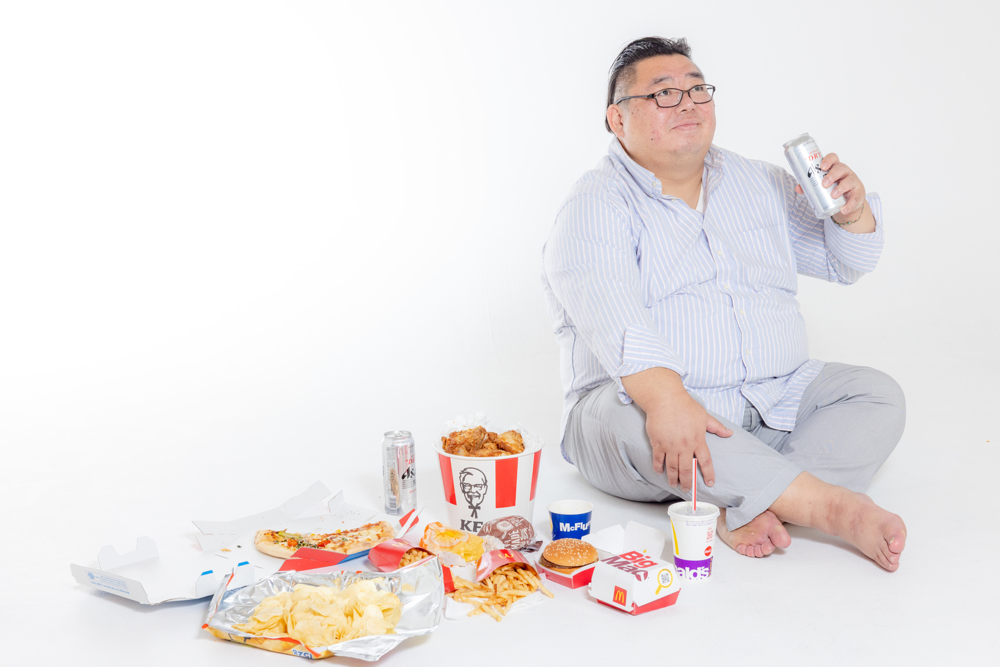
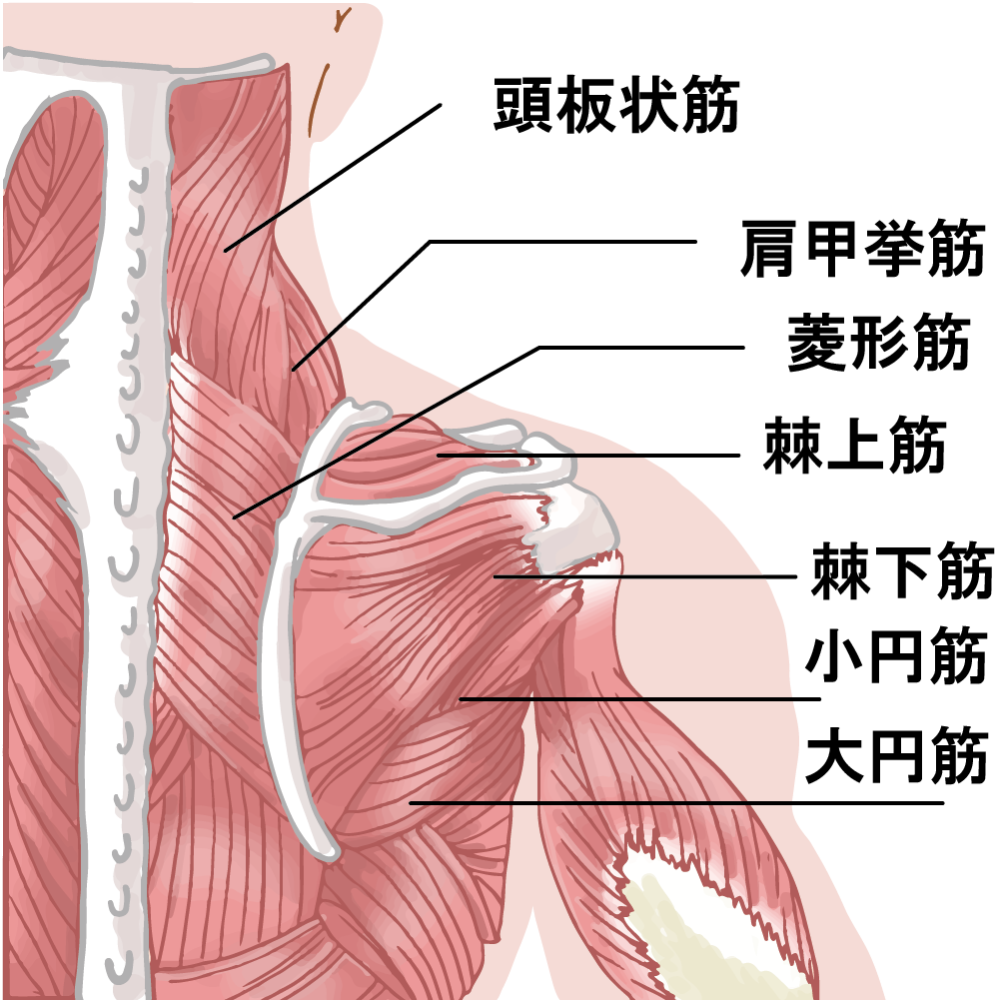
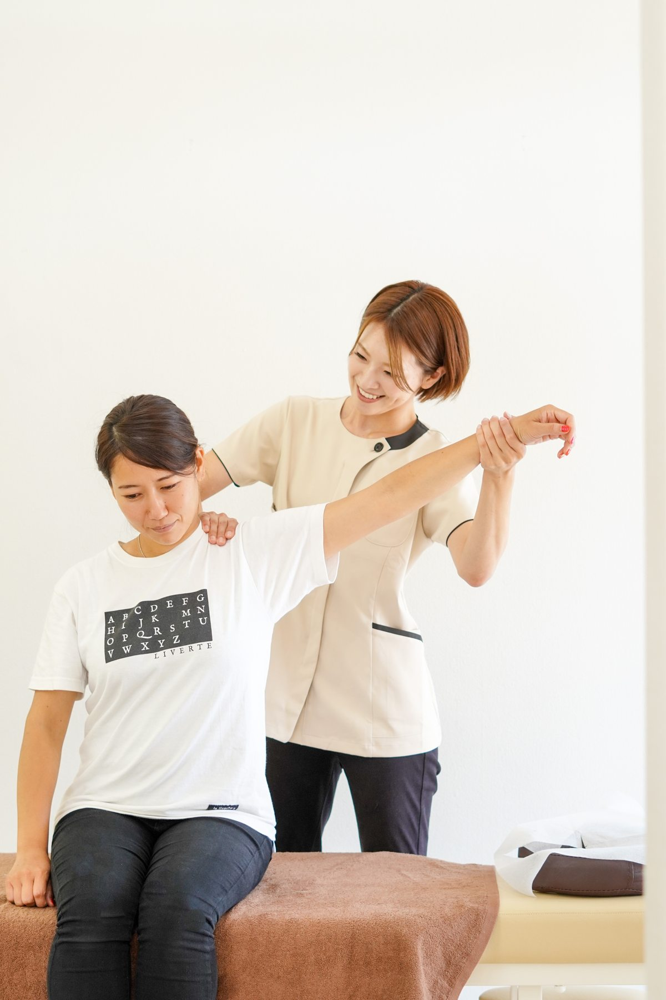
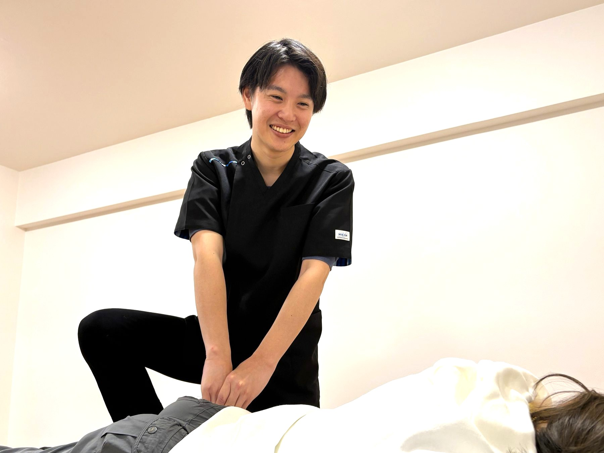
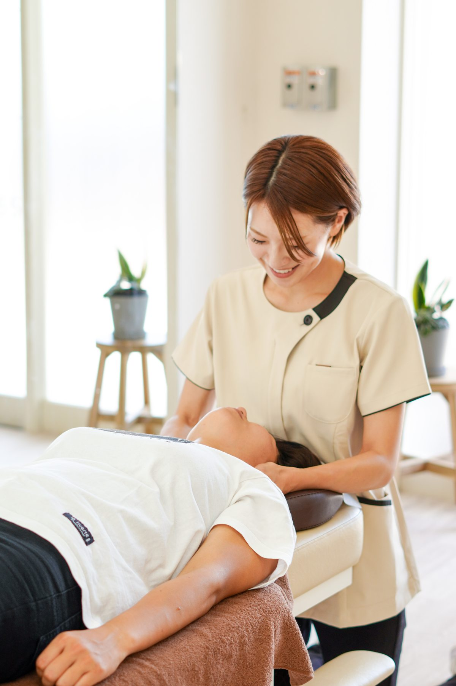
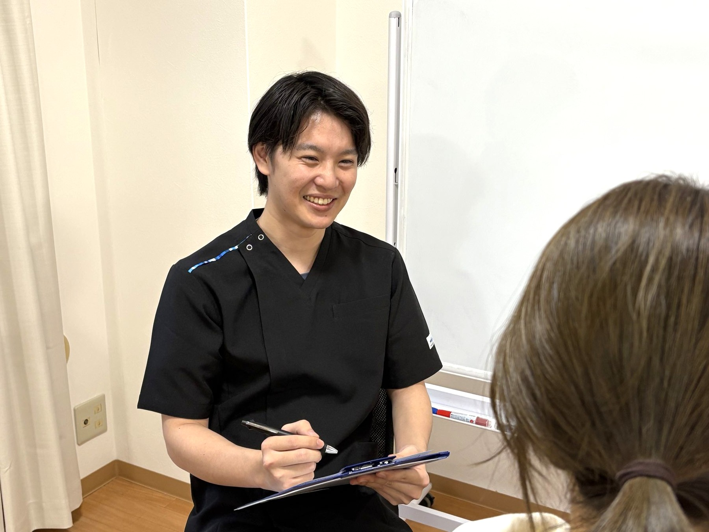

肩が常に重く、スッキリしない
SYMPTOMS
肩こりで
お悩みの方へ
慢性的な肩の重さや張り、繰り返す肩の不快感。
そのお悩み、身体全体のバランスから見直してみませんか？
丁寧なカウンセリング
身体全体の状態確認
一人ひとりに合わせた施術
まずは電話で相談する
受付時間 9:00〜20:00
YOUR CONCERNS
このようなお悩みは
ありませんか？
肩や首の違和感、日常生活で気になることはありませんか？
長時間のデスクワークで肩がつらい
首から肩にかけて張りを感じる
朝起きたときから肩がこっている
肩を動かすと違和感がある
肩の重さや張りが繰り返し気になる
ABOUT SYMPTOMS
肩こりについて

肩こりは日常生活の
さまざまな要因が関係します
肩こりは、首から肩、背中にかけての筋肉の張りや重さ、 痛みなどを感じる状態です。
長時間同じ姿勢を続けることや、身体の使い方、 運動不足、生活習慣など、さまざまな要因が 関係している場合があります。
お悩みのある部分だけでなく、 日常生活や身体全体の状態を確認することも大切です。
POSSIBLE CAUSES
肩こりにつながる主な要因
日常生活の中に、肩への負担につながる習慣が 隠れていることがあります。

01
姿勢の乱れ
猫背や前かがみの姿勢が続くことで、 首や肩周辺の筋肉に負担がかかる場合があります。
02
長時間の同じ姿勢
パソコンやスマートフォンの使用など、 同じ姿勢を長時間続けることが 要因になる場合があります。

03
筋肉への負担
身体の使い方や運動不足などにより、 肩周辺の筋肉に負担が蓄積する場合があります。

04
生活習慣
睡眠環境やストレス、日常生活の習慣なども 身体の状態に影響することがあります。
BODY STRUCTURE
肩周辺の身体の構造
肩の動きには、筋肉や関節など多くの部位が関係しています。

肩周辺には多くの筋肉や関節があります
首から肩、背中にかけては、 僧帽筋や肩甲挙筋など多くの筋肉が関係しています。
また、肩甲骨や鎖骨、上腕骨などの骨格も 肩の動きに関係しています。
身体の状態を確認する際には、肩だけでなく 首や背中など周辺部位も含めて確認することが大切です。
CORE LIFE TREATMENT
Core Lifeの施術方針
お一人おひとりの身体の状態や生活習慣を確認し、 お悩みに合わせた施術をご提案します。

01
カウンセリング
現在のお悩みや生活習慣、身体の状態について 丁寧にお話を伺います。

02
身体の状態確認
姿勢や関節の動きなどを確認し、 身体の状態を総合的に把握します。

03
一人ひとりに合わせた施術
確認した身体の状態に合わせて、 適切な施術をご提案します。

04
セルフケアのアドバイス
日常生活で意識したい姿勢や身体の使い方など、 セルフケアについてもお伝えします。
FAQ
肩こりについて
よくある質問
Q 肩こりは何回くらい通えばよいですか？
A
身体の状態やお悩みの程度によって異なります。 初回の確認を通じて、状態に合わせた通院の目安をご案内します。
Q 肩こりがひどくても施術を受けられますか？
A
まずは身体の状態を確認します。 強い痛みや急な症状、しびれなどがある場合は、 医療機関への受診を優先していただく場合があります。
Q 初めてでも大丈夫ですか？
A
初めての方にも安心してご利用いただけるよう、 カウンセリングを行い、身体の状態や施術内容について 丁寧にご説明します。
YOUR BODY, YOUR BETTER LIFE
身体のお悩みを
相談してみませんか？
お身体の状態を確認し、一人ひとりに合った ケアをご提案いたします。
☎ 080-8942-1161 受付時間 9:00〜20:00